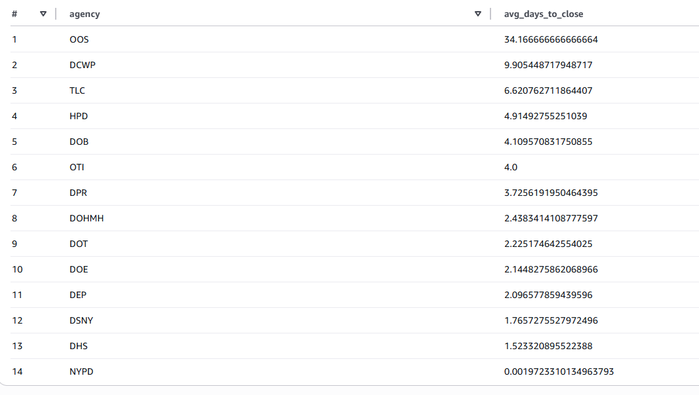

AWS Cloud Computing Project
Built a cloud-based data analysis workflow using AWS services to process and analyze real-world data.
AWS S3
AWS Athena
SQL
More details
Problem
Large datasets are often difficult to process locally. This project explores how cloud-based tools can be used to efficiently query and analyze data.
Approach
Uploaded datasets to AWS S3, created tables in Athena, and used SQL queries to analyze patterns in service request data.
Results & Impact
The project demonstrates how cloud computing can be used to quickly extract insights from large datasets and support data-driven decisions.